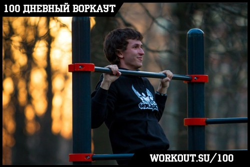
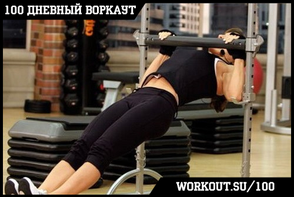
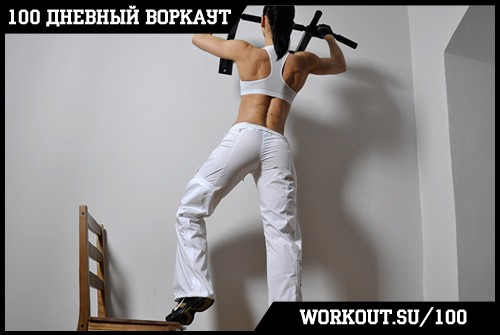
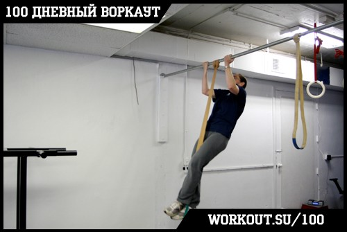
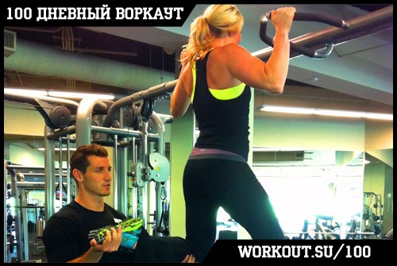
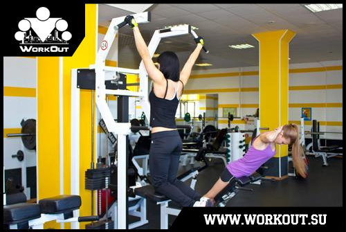

100 Дневный воркаут
<==== Вернуться к оглавлению
День 3. Подтягивания на турнике
Бодрого всем дня, ну а сегодня мы продолжаем разбирать нашу тренировочную программу по составляющим и переходим к первому упражнению - подтягиваниям на турнике. Для многих именно это упражнение является камнем преткновения, поскольку правильные подтягивания - это самое сложное из упражнений в нашем комплексе. Рекомендую сразу приготовиться, потому что информации сегодня будет много!
Подтягивания

Это одно из ключевых упражнений в воркауте, ведь благодаря своей комплексности оно задействует огромное количество мышц нашего тела. При выполнении подтягиваний в работу включаются как крупные мышечные группы (мышцы груди, спины и рук), так и мелкие мышцы стабилизаторы, тренируется хват.
Основные моменты
* Чем больше амплитуда движения, тем больше мышц, окружающих лопатки, задействуется в процессе;
* Когда вы висите на перекладине, ваши плечи должны быть опущены и отведены назад;
* И они должны оставаться такими ВСЁ ВРЕМЯ;
* Старайтесь выполнять подтягивания так, как будто
вы тянете перекладину к себе
, а не себя к перекладине;
* Если при подтягиваниях двигать локти к бокам (то есть опускать их строго вниз, а не назад), то будет больше включаться в работу широчайшая мышца спины;
* Для максимального результата вам необходимо постоянно держать мышцы в напряжении и подтягиваться медленно вверх и медленно вниз;
* Следите за тем, чтобы не округлять спину, в противном случае выбирайте более простые варианты упражнения!
Само упражнение можно разделить на 4 составляющие:
1) Фиксация на турнике
2) Подъём тела вверх
3) Задержка в верхней точке
4) Возвращение в исходную позицию
Техника безопасности
Поскольку в процессе подтягиваний активно задействуются плечевые и локтевые суставы (а так же лучезапястный сустав), то при выполнении этого упражнения очень важно следовать правильной технике:
* Движение должно проводиться по естественной траектории
* Мышцы должны всё время находиться в напряжении
* Никаких рывков и резких движений быть не должно
* При возникновении неприятных ощущений пробуйте другие варианты выполнения упражнения, меняйте хваты и т.д.
Облегченные подтягивания
Если у вас пока не получается выполнять полноценные подтягивания, то вы можете использовать приведённые ниже варианты в качестве подводящих упражнений:

Подтягивания на низкой перекладине (часто их называют австралийскими) позволяют лучше прочувствовать работу мышц спины, особенно когда своих сил недостаточно для выполнения полноценного подтягивания.

Подтягивания с помощью опоры позволяют регулировать распределение нагрузки между руками и ногами при необходимости, таким образом отлично работая в качестве подводящего упражнения, постепенно подготавливающего вас к полноценным подтягиваниям.

Вариант подтягивания с помощью
резиновой петли
более приближен к реальности, поскольку ноги находятся на нестабильной опоре и возникает необходимость стабилизировать тело.

Ну и, наконец, если у вас есть кто-нибудь, кто может вам помочь при выполнении подтягиваний (поднимать ноги), то этот способ так же можно использовать, хотя на мой взгляд он не самый оптимальный.
Пара слов про гравитрон (тренажер для тренировки подтягиваний)

Я пока не встречал НИ ОДНОГО человека, который бы научился подтягиваться с помощью гравитрона. Основная проблема этого тренажера в том, что он практически полностью нивелирует всю комплексность подтягиваний, как упражнения, оставляя только вертикальную тягу (по сути мало чем отличаясь, от тяги блока сверху). Таким образом у вас не включаются в работу мышцы стабилизаторы, гораздо меньшая нагрузка идет на руки, предплечья и хват, снижаются требования к мышцам спины.
Моё личное мнение - этот тренажер - пустая трата времени, поэтому если у вас нет каких-либо серьезных оснований для его использования (например медицинских предписаний), то не стоит к нему даже подходить. Лучше начните с
австралийских подтягиваний
.
Полезные советы
Про дыхание.
В подтягиваниях, как и в любом другом упражнении, действует правило - вдох на расслаблении, выдох на усилии. То есть вы выдыхаете, когда подтягиваетесь вверх и вдыхаете, когда опускаетесь вниз. В начале вам может быть непривычно дышать в таком ритме, но это только первое время, потом привыкните. Более того, добиться высоких результатов в подтягиваниях (я имею в виду 20 и более повторений) без правильного дыхания практически нереально ;)
Про напряжение.
Как я уже писал выше, в подтягиваниях задействуются самые подвижные (а потому и подверженные травмам) суставы нашего тела. Поэтому когда вы подтягиваетесь, очень важно сфокусировать все свое внимание именно на этом процессе и не отвлекаться. Это касается и позитивной фазы (когда тело движется вверх) и негативной фазы (когда тело движется вниз). Никогда не расслабляйте руки до конца, "роняя" себя вниз, спуск тоже должен быть контролируемым, а мышцы рук и спины должны находиться в напряжении.
Про шею.
Если не хотите в будущем иметь проблемы с шейным отделом позвоночника, то перед подходами на турнике, отложите своё эго в сторонку. Дело в том, что очень многие начинают гнаться за количеством, за цифорками и результатами, и готовы делать любые подтягивания и изворачиваться как угодно, лишь бы их подбородок оказался выше перекладины. Сходите на ближайшую уличную площадку и посмотрите на таких "спортсменов". Уверен, что и рядом с вами есть ребята, которые вместо того, чтобы подтягиваться спиной, стараются вытянуть шею как можно дальше и выше. Не будьте такими. Держите шею при подтягиваниях так же, как и когда просто стоите на земле. Взгляд направлен перед собой. Тяните себя вверх только спиной и руками, если при этом ваш подбородок ниже турника, это не повод расстраиваться, значит вам просто надо набрать ещё сил. Со временем у вас всё получится ;)
Про кисти и хват.
Очень многие выполняя подтягивания замечают, что в первую очередь их подводит хват, и руки как бы сами собой расцепляются, хотя они могли бы подтянуться ещё несколько раз. В этом случае я бы порекомендовал включить в свои тренировки (после прохождения кругов) немного упражнений, которые будут специально направлены на развитие силы хвата. Это могут быть как простые висы на турнике на максимум времени (чем толще турник найдете, тем лучше), так подтягивания на полотенцах, тренировки на рукоходах и лабиринтах и т.д.
Про разные виды хватов и их чередование.
Если вы начинаете свой путь в воркауте с нашей программы (и подтягиваетесь меньше 10 раз), то я бы рекомендовал вам подтягиваться только хватом сверху +/- на ширине плеч (если не можете подтянуться 5 раз таким хватом, попробуйте хват снизу +/- на ширине плеч).. Поскольку подтягивания это новое и довольно сложное упражнение, то не стоит разбрасывать свои силы и энергию и пытаться сразу научиться подтягиваться всеми возможными хватами. Мы подробно разберем различные виды хватов и то, как они позволяют смещать нагрузку с одних мышц на другие в ПРОДВИНУТОМ блоке.
В случае, если вы не новичок, то можете менять хваты по собственному усмотрению, но мы бы рекомендовали делать по правилу 1 день = 1 хват.
Про ноги.
Мой любимый совет касается положения ног при подтягиваниях, хотя многие об этом моменте даже не задумываются. Самый сложный и самый правильный вариант - когда вы держите ноги вместе, перпендикулярно земле, напрягая мышцы ног, чтобы их не болтало и не шатало при подтягиваниях. Да, так подтягиваться гораздо сложнее, чем если их скрестить или подогнуть, но это лишь значит, что эффективность подтягиваний с точки зрения нагрузки стала выше! Да и смотрятся такие чистые подтягивания на порядок эстетичнее ;)
======> День 4. Приседания (правильные)